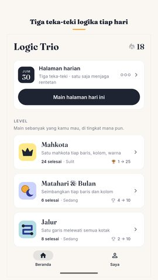
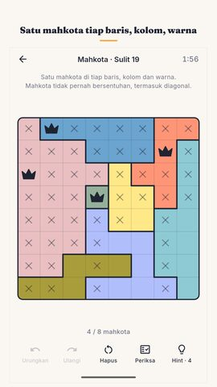
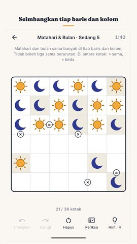
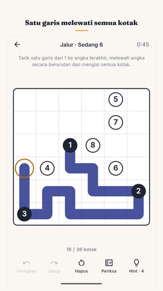
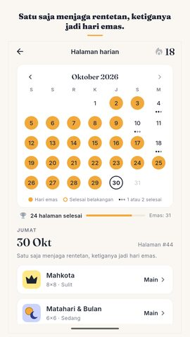
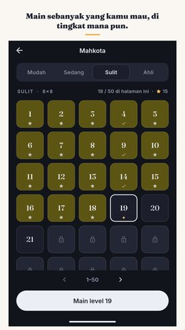
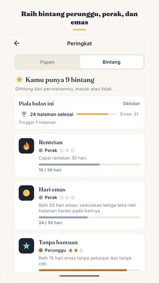
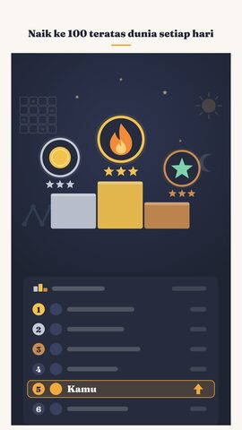

Kit pers Logic Trio
Semua yang Anda perlukan untuk menulis tentang game ini atau menampilkannya di video. Silakan gunakan dengan bebas.
Logic Trio: Teka-Teki Harian
Teka-teki logika harian: Mahkota, Matahari & Bulan, Jalur. Main offline.
Video
Tangkapan layar
















Ikon dan banner

Tentang game
Setiap hari ada halaman baru berisi tiga teka-teki logika, sama untuk semua pemain di seluruh dunia. Mahkota, Matahari & Bulan, Jalur: masing-masing punya tepat satu solusi, dan Mahkota serta Matahari & Bulan bisa diselesaikan tanpa menebak sama sekali. Selesaikan satu untuk menjaga rentetanmu, ketiganya untuk hari emas.
Halaman harian
Halaman berganti tengah malam di ponselmu sendiri. Hari pertama adalah 17 September 2026, dan setiap halaman sejak itu masih ada di kalender bulanan, jadi hari yang kamu lewatkan tetap bisa dimainkan. Satu teka-teki selesai sudah cukup untuk menjaga rentetan, dan itu sengaja dibuat ringan: hari yang sibuk seharusnya tidak menghapus rentetan yang kamu bangun berminggu-minggu. Selesaikan ketiganya dan hari itu jadi emas. Sepuluh hari emas dalam sebulan memberi piala perunggu, dua puluh piala perak, dan sebulan penuh piala emas. Pembeku rentetan menjaga rentetanmu saat satu hari terlewat. Setelah halaman selesai ada kartu hasil singkat, tanpa bocoran, yang bisa kamu kirim ke siapa saja.
Tiga permainan
Mahkota: taruh satu mahkota di tiap baris, kolom dan warna, dan jangan sampai dua mahkota bersentuhan, termasuk diagonal. Ini teka-teki star battle.
Matahari & Bulan: isi papannya sampai matahari dan bulan sama banyak di tiap baris dan kolom, dan tidak boleh tiga sama berurutan. Ini teka-teki biner.
Jalur: tarik satu garis dari angka pertama ke angka terakhir, melewati angka secara berurutan dan mengisi semua kotak. Ini teka-teki number path.
Level yang tidak pernah habis
Selain halaman harian, tiap permainan punya teka-teki logika bernomor sendiri dalam empat tingkat: Mudah, Sedang, Sulit dan Ahli. Keempatnya terbuka sejak menit pertama. Tiap permainan berisi 1.200 level yang diperiksa satu per satu, 3.600 untuk ketiganya, dan setelah paket itu habis ponselmu diam-diam membuat lagi, selama kamu masih main. Tiap level dalam paket diselesaikan dua kali, dengan dua metode berbeda, sebelum dirilis, jadi "tepat satu solusi" adalah fakta yang diperiksa, bukan janji.
Bantuan yang mengajari
Urungkan dan Ulangi tanpa batas. Periksa gratis dan tanpa batas, dan memberi tahu sejauh mana kamu benar tanpa menyerahkan jawabannya. Hint juga tidak mengisi jawabannya: ia menunjukkan ke mana harus melihat dan, di Mahkota serta Matahari & Bulan, menjelaskan dalam satu kalimat kenapa kotak itu harus begitu, supaya teka-teki berikutnya terasa lebih mudah. Kalau ada yang salah di papan, Hint menunjuk kesalahan itu lebih dulu.
Tidak ada hitungan mundur
Tidak ada nyawa, tidak ada energi, tidak ada batas langkah, dan kamu tidak dikejar waktu. Stopwatch-nya menghitung maju, untuk rekor waktumu sendiri, dan bisa dimatikan. Tidak perlu akun. Login ke Google Play Games opsional: progresmu ikut ke ponsel lain, plus pencapaian dan papan peringkat dunia. Waktu, rekor rentetan dan jumlah teka-teki yang kamu selesaikan tersimpan di satu halaman. Seluruh game bisa dimainkan offline, tanpa internet.
Mudah dibaca siapa saja
Bahasa Indonesia, Inggris, Hindi, Portugis, Spanyol, Jerman dan Prancis. Tema terang dan tema gelap. Pola di atas area berwarna untuk pemain buta warna, jadi papannya tetap terbaca dalam hitam putih. Pengingat harian opsional, mati sampai kamu menyalakannya. Di bawah 25 MB untuk diunduh.
Gratis, dengan iklan
Logic Trio adalah game puzzle logika gratis yang dibiayai iklan. Tidak ada iklan yang memotong teka-teki, tidak ada yang muncul saat kamu membuka game, dan tidak ada yang menyelip di antara tiga teka-teki hari itu; teka-tekinya jalan offline, hanya iklannya yang perlu koneksi. Tujuh hari terakhir di kalender selalu terbuka, dan satu video pendek opsional bisa membuka halaman lama selamanya, menambah petunjukmu, atau memperbaiki rentetan yang putus. Tidak ada satu pun yang wajib untuk terus bermain.
Dibuat oleh Nimbleknot.
Pertanyaan dan laporan bug: nimbleknot.games@gmail.com
Kebijakan privasi dan ketentuan: https://nimbleknot.github.io/logictrio/
Saya bukan programmer, jadi saya dibantu AI untuk menulis kodenya. — Ritesh, Nimbleknot